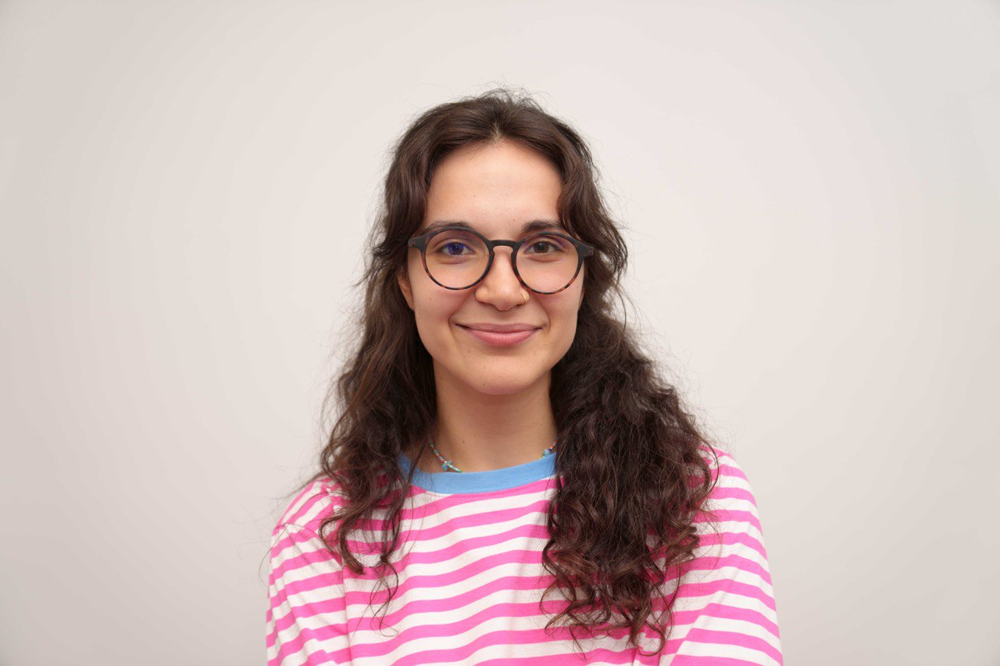

Lisa Mangupli
 Based: Bath, United Kingdom · Full right to work in the UK
Based: Bath, United Kingdom · Full right to work in the UK


About
As a software engineer with a background in both corporate and startup environments, I've had the opportunity to building scalable systems in the FinTech and EdTech Industries.
Briefly
- 7 years (
TypeScript,React,Elixir,Node,GraphQL,PostgreSQL,SQL,AWS,Docker) - Full ownership of features end-to-end
- Mentor engineers, and hackathon finalist
- Worked on a couple of government projects, but I'm not a Russian spy
 Experience
Experience
| Dates | Job |
|---|---|
| Feb 2024 - Present | Cadmus — an assessment platform used by universities in Australia, New Zealand and the UK. ( Lead Engineer, Nov 2025 - Present. Senior Software Engineer, Feb 2024 - Nov 2025.
TypeScript, Elixir, React, GraphQL, PostgreSQL, AWS, Datadog, Sentry. https://cadmus.io/ |
| Mar 2023 - Jan 2024 | Fullstack Developer and Mentor at Elbrus Coding Bootcamp. (TypeScript, React, Redux Toolkit, NodeJS, Express, Jest, PostgreSQL, Docker. https://elbrusboot.camp/ |
| Jun 2022 - Jun 2023 | Contract and freelance engineer. (remote, and St Petersburg) Four clients over a year, lead front-end on two of them.
React.js, Python, Redux Toolkit, Docker, JavaScript, PHP, SASS, Figma. |
| Jun 2021 - May 2022 | Database Developer at Sovcombank. (SQL, Data modelling, Data engineering, DWH. https://sovcombank.ru/en/ |
| Sep 2019 - Aug 2020 | Earlier: frontend developer at Barre One, a fitness studio in St Petersburg. https://www.barre.one/ |
Education
Computer Science. 42 Ecole – a private institution of higher education (Kazan, Russia). 2020 - 2022
Skills: C, C++, Kubernetes, Unit Testing, TDD, Microservices, Technical Solution Design
Diploma of Management. Russian Institute of Performing Arts (St Petersburg, Russia). 2016 - 2022
My thesis designed a CRM for performing-arts companies, more than 90% of which used none at the time. Four large St Petersburg theatres wanted it, because it would improve how they stored their data and help them know their audience.
PS: This is my CV but you can fork the repo and make the one for yourself. Read src/README.md.